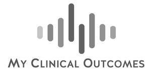
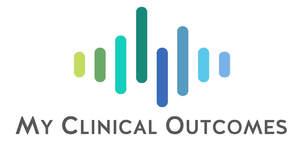

Trade Mark Journal No.2026/006 6 February 2026
UK00004328547 22 January 2026 (9,35,42)
Mark 1

Mark 2

- Class 9
- Computer software for the collection, management and analysis of patient-reported outcome measures (PROMs) and patient-reported experience measures (PREMs); Computer software for recording, tracking and managing patient health data over time; Computer software for integrating patient-reported data with hospital electronic medical records (EMR), patient administration systems (PAS) and other healthcare information systems; Computer software for enabling single sign-on and data exchange between healthcare platforms; Computer software for displaying healthcare performance metrics, outcome scores and benchmarking data in graphical and visual formats; Patient-facing computer, mobile and tablet software applications enabling users to submit health feedback, symptoms and treatment responses remotely; Computer software for exporting healthcare-related data for clinical analysis, audit and research purposes.
- Class 35
- Collection, compilation and analysis of health and clinical data for use in evaluating healthcare service performance and patient outcomes; Management and administration of patient-reported outcome measures (PROMs) and patient-reported experience measures (PREMs) data for healthcare providers; Analysis of patient-reported data to produce reports and insights for healthcare organisations; Provision of benchmarking data and performance indicators for business and service management purposes within healthcare organisations; Business consultancy services relating to data collection, outcome measurement and reporting strategies in clinical settings; Maintenance and management of healthcare administrative records and patient datasets for business and organisational purposes.
- Class 42
- Provision of access to web-based software for collecting, managing and analysing patient-reported outcome and experience measures; Software as a service (SaaS) featuring tools for healthcare providers to monitor patient-reported data, review outcome scores and generate clinical and service performance reports; Provision of non-downloadable cloud-based software for integrating patient-reported outcome measures (PROMs) and patient-reported experience measures (PREMs) data with hospital and healthcare IT systems; Hosting of digital platforms for use by patients to report symptoms, outcomes and treatment experiences, and for use by clinicians and administrators to access patient data in real time; Development, configuration and maintenance of web-based healthcare software platforms enabling flexible scheduling of assessments and customisation of assessment content according to patient condition, treatment pathway and timing; Data security, hosting and protection services relating to patient-reported clinical data stored on cloud-based platforms.
MY CLINICAL OUTCOMES LTD
Representative: Seven Legal